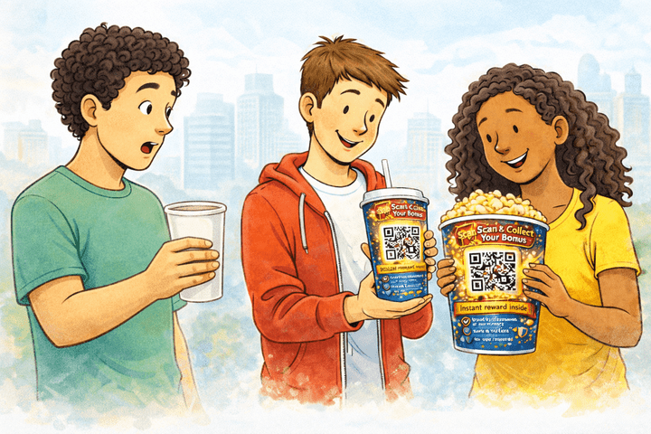
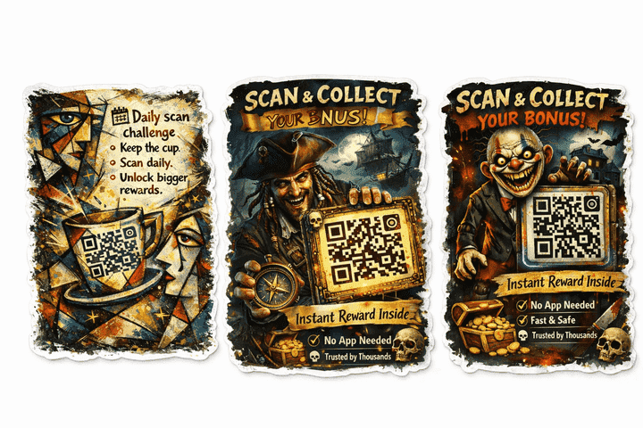
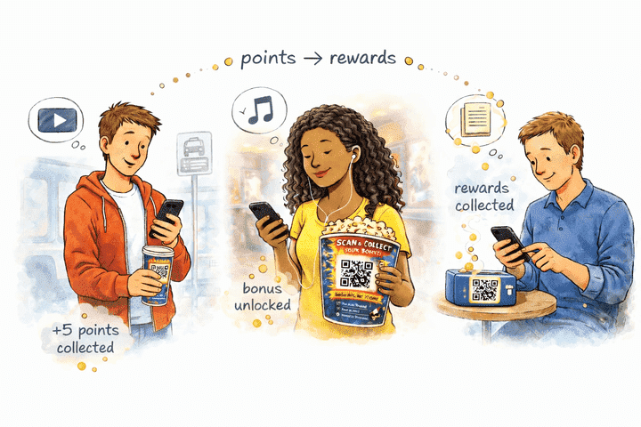
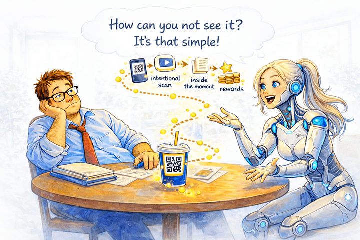
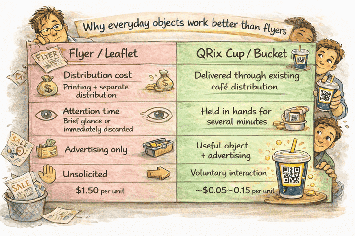
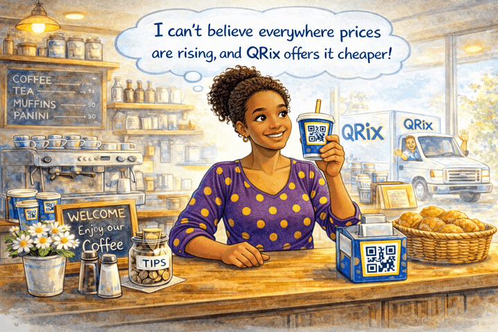
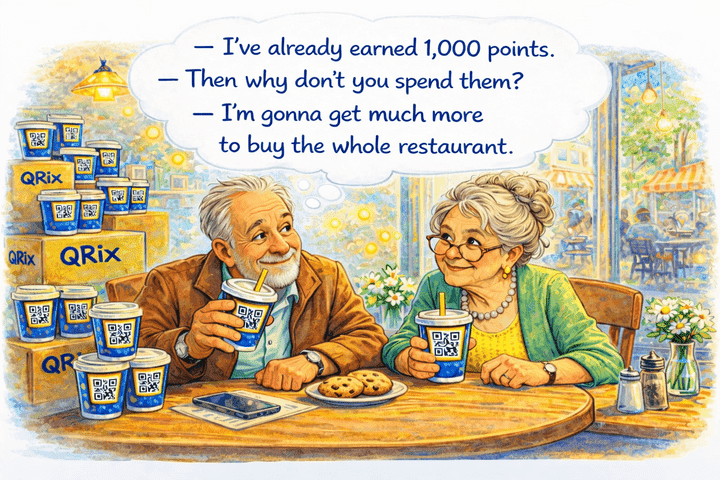
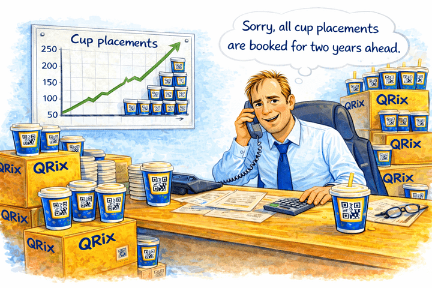
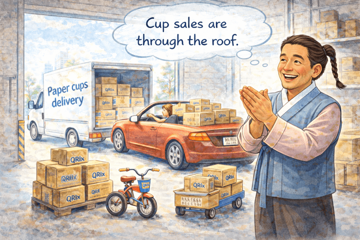

QRix — Turning Everyday Packaging into Interactive Media
We transform cups, popcorn buckets and food packaging into digital touchpoints powered by QR technology.
- Scan.
- Unlock stories, rewards and experiences.
- Connect brands with real-life moments.
- Make packaging work harder.
QRix: The ad space people actually hold
People already hold the perfect ad space in their hands. QRix turns everyday items into interactive ad space.
A simple QR scan connects everyday moments to stories, rewards, and interactive experiences.
It starts with a moment of curiosity
A person orders a drink or a snack and receives an item with an attractive illustration and a QR code. It doesn’t ask for attention — it earns it.
For the customer, scanning is worth it
It gives something real in return. Points are collected and can later be used with participating partners across the QRix network.
Beyond rewards, it turns otherwise idle minutes — waiting, walking, sitting — into something light and engaging: a short story, a video, audio, or a small interactive moment.
For advertisers: reach people when they choose to engage
Advertisers don’t buy banners on paper items. They appear inside a page people intentionally open — at the right moment.
Formats stay flexible: a message, an illustration, a reward, a mini-game, or a seasonal challenge — whatever fits the moment.
Why everyday objects work better than flyers
Why QRix makes sense for cafés, restaurants, and stores
The advertiser helps cover the cost of the cup or other packaging, so venues pay less — or nothing at all — while continuing to use the packaging they already buy.
In return, cafés, restaurants, and stores get more than just a container. The object looks better, feels intentional, and adds a modern touch customers actually notice.
Built-in rewards that bring customers back
Every scan in QRix earns points. People collect more by exploring content — reading, playing, or interacting during moments that would otherwise be idle. These points are redeemed at the same cafés, restaurants, and stores — driving repeat visits and extra sales at no cost to the venue.
Rewards are funded by advertisers, whose spend stays far below traditional flyers or leaflets. QRix brings proven loyalty mechanics to small, independent places — with no setup required. Venues can also join for free by adding their own stories, games, or useful info inside the same QR experience.
One object. One scan. Three benefits
Customers get a fun, rewarding interaction.
Advertisers get attention that isn't skipped.
Venues get reduced packaging cost, a better product in hand — and repeat customers through built-in rewards.
Where Do the Cups, Buckets, and Packaging Come From?
QRix doesn’t buy cups. Instead, we work directly with local distributors to provide cups and packaging with custom QR codes and ads.
1. Large Orders with Big Advertisers
When large advertisers need a big run of cups, we co-order a batch with our distributor partners, ensuring the required QR codes and illustrations are printed directly on the cups.
2. Small Orders with Custom Stickers
For smaller runs — starting from as few as 50–100 cups — we print custom stickers with QR codes and illustrations. These stickers are applied to existing cups, adding a small cost of only 1–2 cents per cup.
3. Partnerships with Local Distributors
In every major city, including Calgary, there are dozens of distributors that supply cups, buckets, lunchboxes, and other packaging. Instead of buying packaging, QRix partners with these distributors, who provide their cups for us to apply custom stickers to. Distributors can also participate in large co-orders for high-volume runs, ensuring everything is printed and ready for our clients.
4. Why This is Beneficial for Distributors
By working with QRix, distributors effectively sell advertising space on their cups. This allows them to generate additional revenue from each cup sold. With this extra profit, distributors can significantly lower the price of cups for cafés, restaurants, and stores, making them more competitive.
Importantly, by offering these discounts to their customers, distributors actually earn more, because the revenue from the ads more than covers the discount they provide. This gives them a competitive edge, allowing them to capture a larger share of the market while still increasing their sales and revenue.